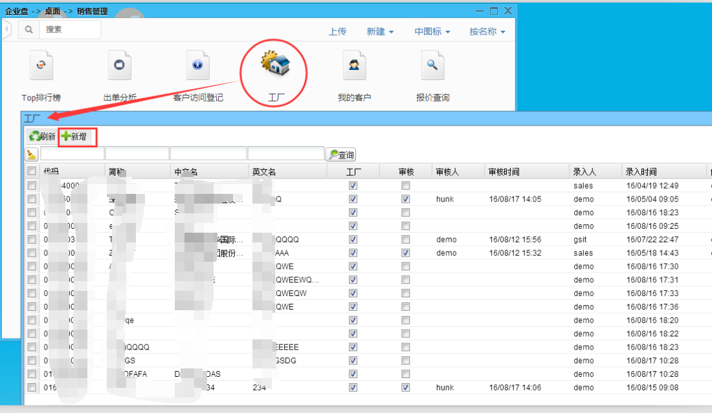
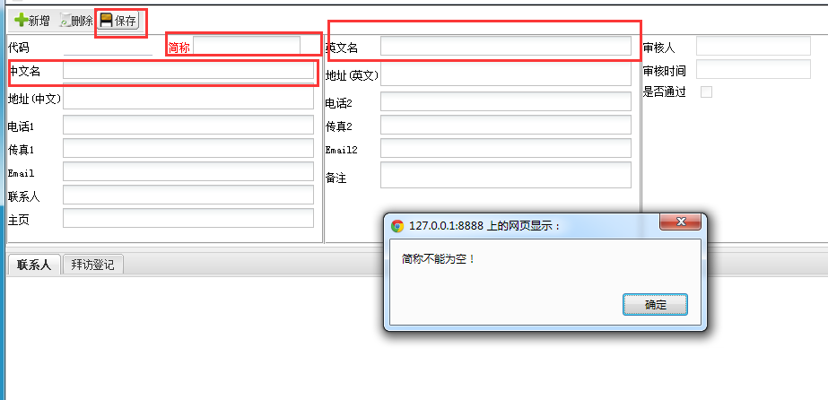
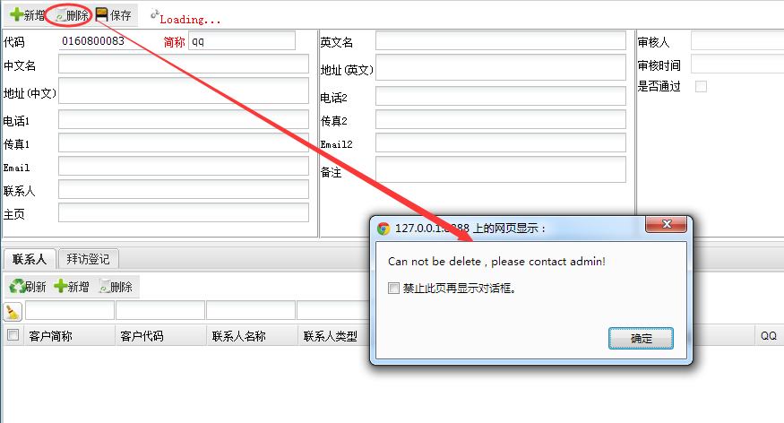
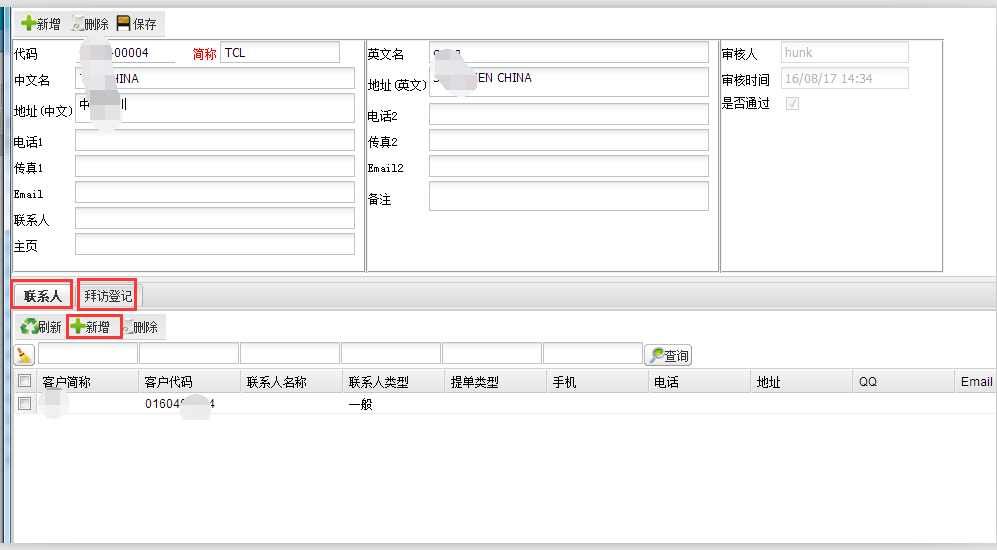
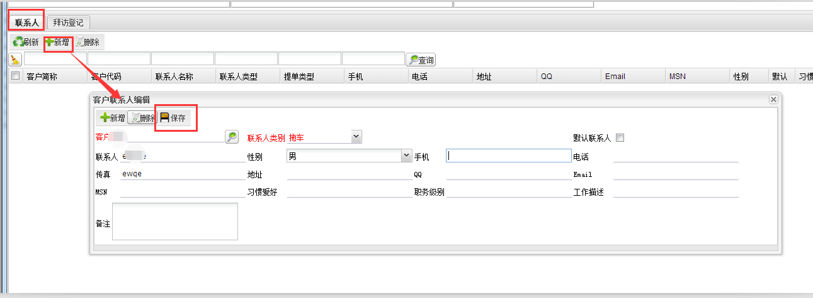
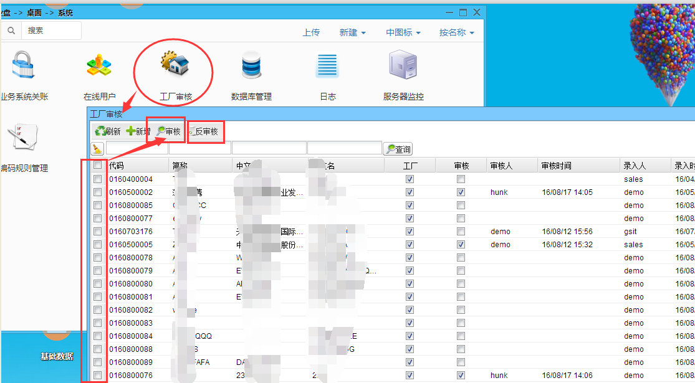
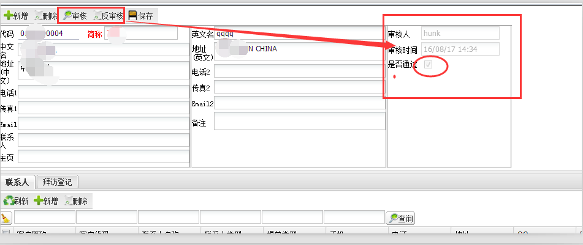

1.下图是工厂页面：由业务员在销售管理模块下面，录入工厂资料

2.点击上图中的新增进入下图所示新增界面

3.此处简称为必填项，中文名和英文名不能都为空，否则不能保存。
注意：请谨慎保存信息，此处非admin用户不能删除，如下图提示：

4.此处还可增删联系人和拜访登记，如下图所示

5.如：新增联系人，点击联系人的新增，在弹出的客户联系人编辑中填写好信息后点击保存即可。

1.下图是工厂管理页面：在系统模块下面，由专门指定的人员审核业务员录入的工厂资料

2.有两种审核方法：一种是上图中的勾选行然后再点击审核，此方法可以多项审核；还可以双击行进入编辑界面后点击审核，如下图所示

3.点击审核后在右边会展示审核人和时间，点击反审核后是否通过的勾选会去掉，表示审核还未通过